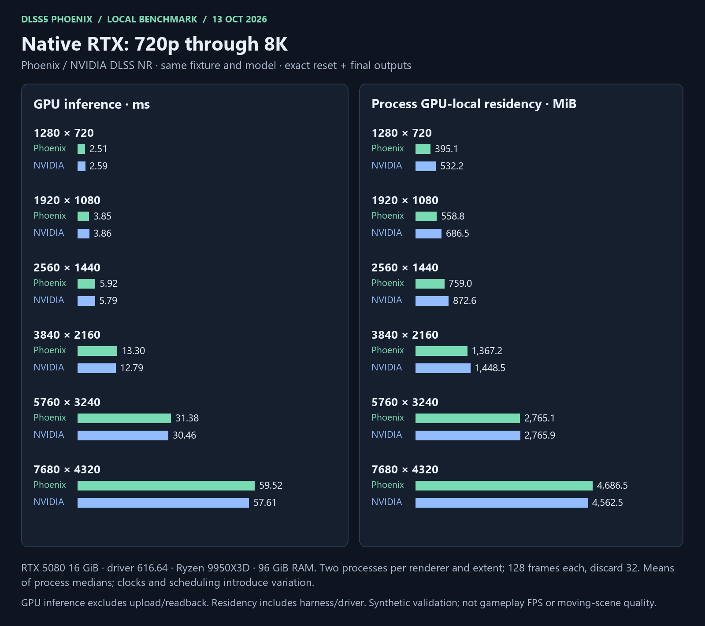
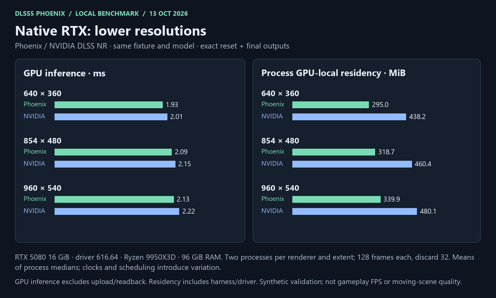
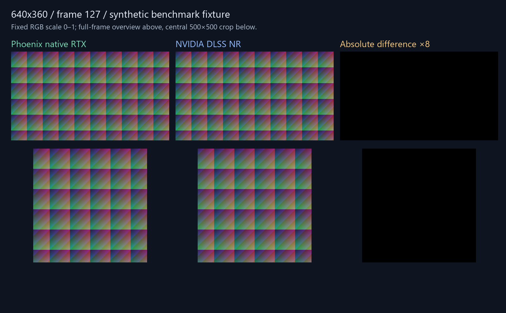

13 October 2026 · RTX 5080 16 GiB · NVIDIA 616.64 · Ryzen 9 9950X3D, 32 threads · 96 GiB RAM.
Identical synthetic RGBA16F color / RG16F motion, model and controls; full eight blocks, one pass. Two fresh processes per renderer and extent, 128 frames each; first 32 discarded. Figures average the process medians. GPU inference excludes upload/readback; GPU residency includes harness and driver. These are offline checks, not game FPS.
| Resolution | Phoenix ms | NVIDIA ms | Phoenix GPU MiB | NVIDIA GPU MiB | Output |
|---|---|---|---|---|---|
| 640 × 360 | 1.928 | 2.010 | 295.0 | 438.2 | Exact reset + final |
| 854 × 480 | 2.091 | 2.153 | 318.7 | 460.4 | Exact reset + final |
| 960 × 540 | 2.127 | 2.222 | 339.9 | 480.1 | Exact reset + final |
| 1280 × 720 | 2.505 | 2.587 | 395.1 | 532.2 | Exact reset + final |
| 1920 × 1080 | 3.845 | 3.861 | 558.8 | 686.5 | Exact reset + final |
| 2560 × 1440 | 5.925 | 5.787 | 759.0 | 872.6 | Exact reset + final |
| 3840 × 2160 | 13.303 | 12.791 | 1,367.2 | 1,448.5 | Exact reset + final |
| 5760 × 3240 | 31.382 | 30.459 | 2,765.1 | 2,765.9 | Exact reset + final |
| 7680 × 4320 | 59.519 | 57.612 | 4,686.5 | 4,562.5 | Exact reset + final |
Reset and frame 127 match exactly at every listed extent. This fixture does not certify moving-scene quality. Timing ranges, host memory and numerical receipts: measurements · validation · methodology and limitations.


Final frame 127; fixed RGB range 0–1, no automatic exposure or contrast. Left: Phoenix. Middle: NVIDIA. Right: absolute difference ×8. Synthetic fixture, not a game screenshot.
